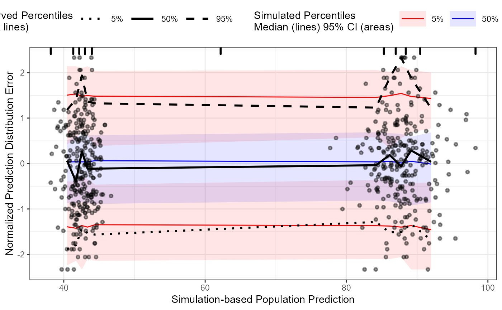

Normalized Prediction Distribution Errors
npde(o, ...) # S3 method for tidyvpcobj npde(o, id, data = o$data, smooth = FALSE, ...)
| o | A tidyvpc object. |
|---|---|
| ... | Additional arguments |
| id | A vector of IDs. Used to associate observations |
| data | A |
| smooth | Should a uniform random perturbation be used to smooth the pd/pde values? |
Brendel, K., Comets, E., Laffont, C., Laveille, C. & Mentrée, F. Metrics for external model evaluation with an application to the population pharmacokinetics of gliclazide. Pharm. Res. (2006) 23(9), 2036–2049.
Nguyen, T.H.T., et al. Model evaluation of continuous data pharmacometric models: metrics and graphics. CPT Pharmacometrics Syst. Pharmacol. (2017) 6(2), 87–109; doi:10.1002/psp4.12161.
#>obs <- obs_data[MDV==0] sim <- sim_data[MDV==0] npde <- observed(obs, x=NULL, y=DV) %>% simulated(sim, y=DV) %>% npde(id=ID)#> Warning: first element used of 'length.out' argument#> Warning: first element used of 'each' argumentvpc <- observed(npde$npdeobs, x=epred, y=npde) %>% simulated(npde$npdesim, y=npde) %>% binning("eqcut", nbins=10) %>% vpcstats() plot(vpc) + labs(x="Simulation-based Population Prediction", y="Normalized Prediction Distribution Error")# }